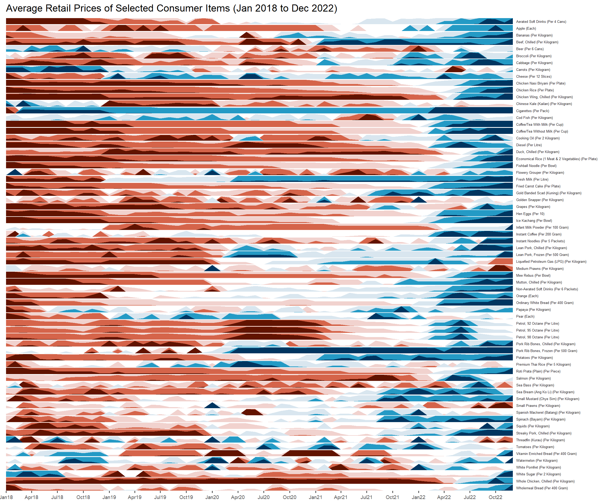

pacman::p_load(tidyverse, ggHoriPlot, ggthemes)In-class Exercise 06 - Time Series on Tableau and R
1. Time Series Line and Cycle Plots Using arrivals_by_air
1.1. Pivot Data
Select from Republic of South Africa to New Zealand while holding down the shift key. Click on down arrow > pivot.

Rename the pivoted columns.

1.2. Line Plot
We can now plot Year against Sum(Arrivals). We can toggle the display to show Year-Month aggregation by selecting Month in the dropdown list.

Pivoting allows us to apply Country as a filter to show the aggregated arrival numbers by country of our choice.

We can change the style of the filter using the following option:

1.3. Line Plot
We can create a cycle plot on Tableau by adding Year as a Column argument in addition to Month.

1.4. Dashboard
Next, we create a dashboard with an “automatic” size.

Putting both graphs together as a Dashboard, we see that the filter functions work separately. We can link the filter function for both plots using the following function:

Now that the filters are linked, we can remove one of them on the Dashboard, for clarity.

1.5. Publish to Tableau Public
Finally, we publish our completed dashboard to Tableau Public. To do so, we first extract the data on Tableau:


Publish to Tableau Public:

All done :)

2. Calendar Heatmap Using eventlog
First, we create a skeleton resembling a calendar with Weekdays as rows and Month and Week Number as Columns:

Next, we create a Calculated Field “No. of Attack” and enter 1 as the value.

We can drag and drop the field into Color to display on the chart.

We follow the same steps listed in 1.5. Publish to Tableau Public to publish the visualisation to Tableau Public:

3. Time on Horizon using ggHoriPlot
3.1. Overview
A horizon graph is designed to visualise large numbers of time series by overcoming the issue of highly-overlapping time-series graphs.
3.2. Getting Started
3.2.1. Installing and Loading Packages
We will use the following R packages in addition to tidyverse for this exercise:
ggHoriPlot: ggplot2 extension to create horizon graphs
The packages to be used can be installed and loaded into the R environment using the p_load() function from the pacman package:
3.2.2. Import Data
Next, we will read the data, Average Retail Prices Of Selected Consumer Items, downloaded and processed by the Course Instructor into the R environment. We will use the read_csv() function from the readr package found in tidyverse.
averp <- read_csv("data/AVERP.csv") %>%
mutate(`Date` = dmy(`Date`))3.3. Plotting Horizon Graph
Lastly, we plot the horizon graph using the geom_horizon() function from ggHoriPlot package:
averp %>%
filter(Date >= "2018-01-01") %>%
ggplot() +
geom_horizon(aes(x = Date,
y = Values),
origin = "midpoint",
horizonscale = 6) +
facet_grid(`Consumer Items`~.) +
theme_few() +
scale_fill_hcl(palette = 'RdBu') +
theme(panel.spacing.y = unit(0, "lines"),
strip.text.y = element_text(size = 5, angle = 0, hjust = 0),
legend.position = 'none',
axis.text.y = element_blank(),
axis.text.x = element_text(size=7),
axis.title.y = element_blank(),
axis.title.x = element_blank(),
axis.ticks.y = element_blank(),
panel.border = element_blank()) +
scale_x_date(expand = c(0,0),
date_breaks = "3 month",
date_labels = "%b%y") +
ggtitle('Average Retail Prices of Selected Consumer Items (Jan 2018 to Dec 2022)')